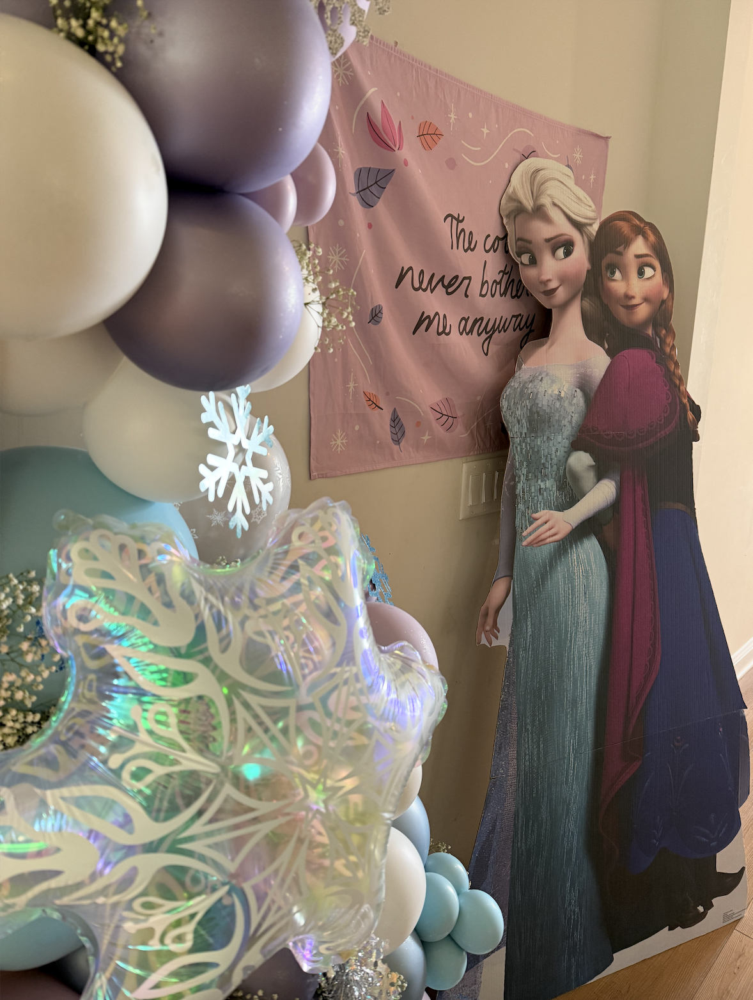
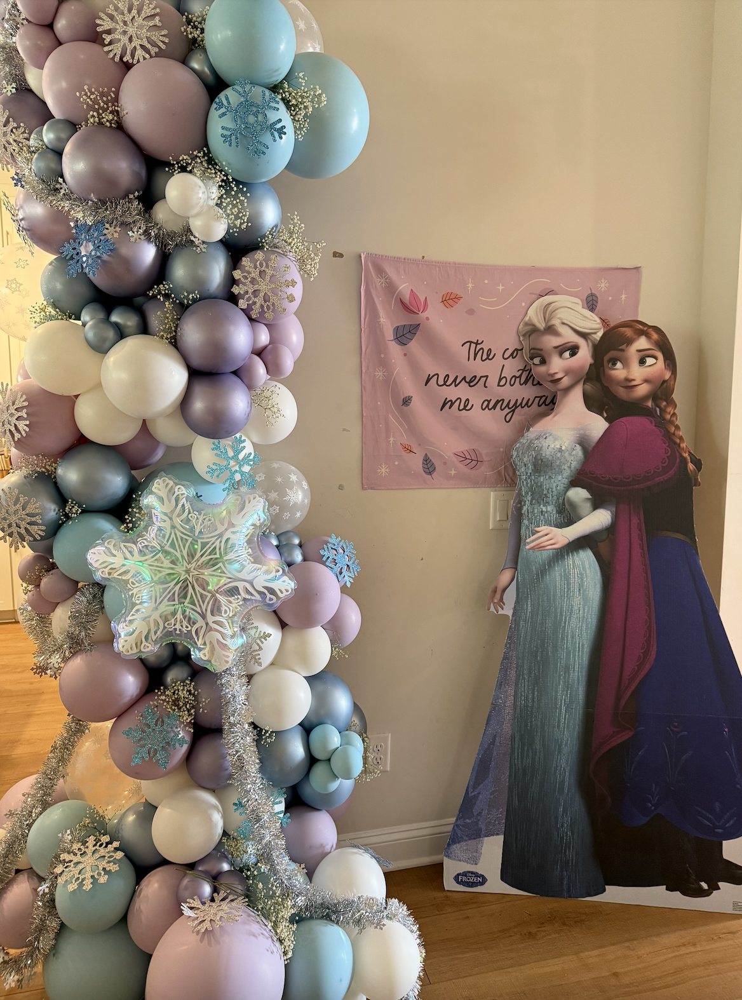
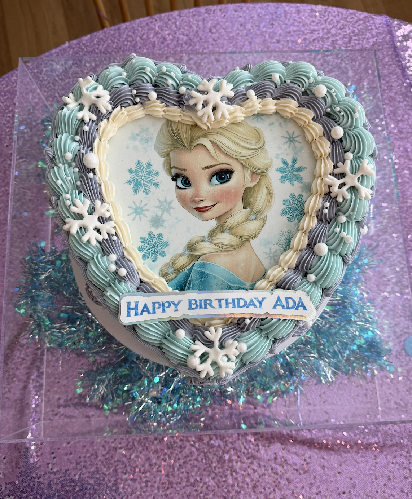
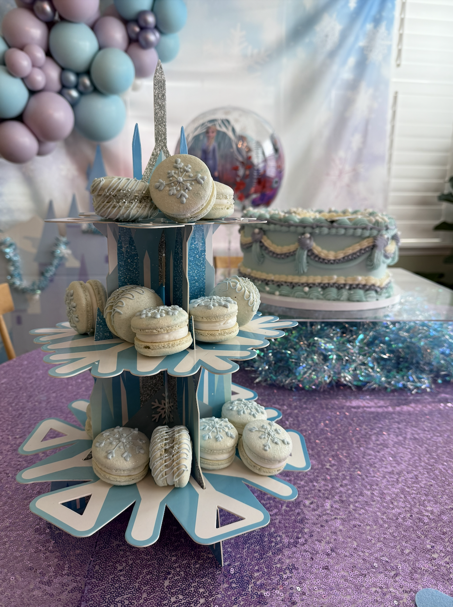
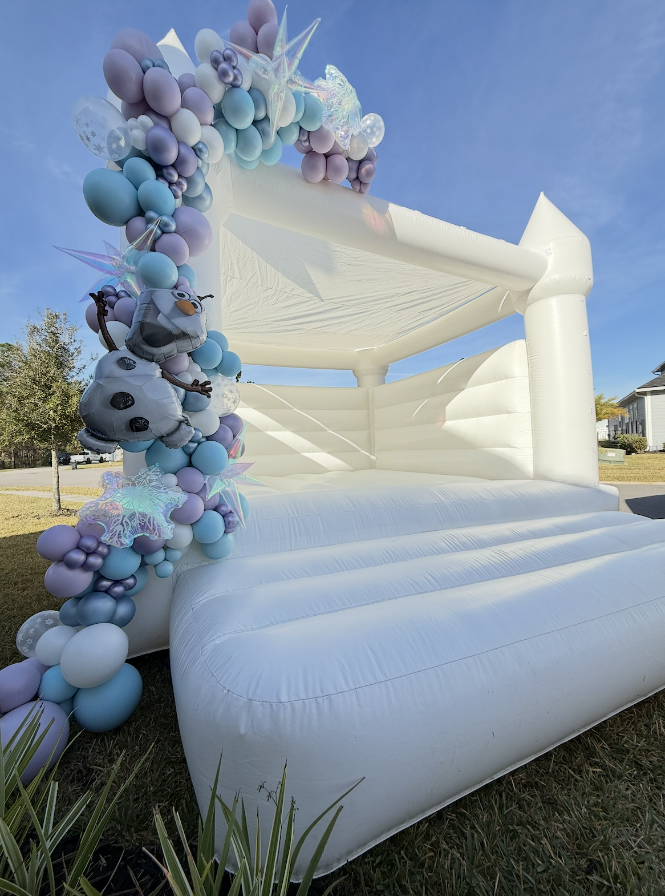

Creating a Magical Frozen-Inspired Birthday for Ada's 7th Birthday
For my daughter Ada’s 7th birthday, we went all out with a Frozen-themed party featuring a custom balloon color palette, themed treats, and fun activities.
The Enchanting Balloon Display
We created a custom color palette for the balloon display, featuring icy blues, soft lavenders, and pearly whites to bring the Frozen magic to life.
 The Show-Stopping Cake
No Frozen party is complete without a stunning cake! We had a beautiful heart-shaped Elsa cake with delicate snowflake details.
Sweet Treats
A snowflake-themed macaron and cookie cake display added the perfect touch of elegance and fun.
The Ultimate Frozen Bounce House
For the kids, we had a white castle bounce house decorated with balloon garlands, featuring Olaf for an extra fun touch!
A Birthday to Remember
Every detail of Ada's Frozen-inspired birthday was designed to make her day magical. From the dreamy balloon installations to the delicious treats, it was truly a day fit for a princess!